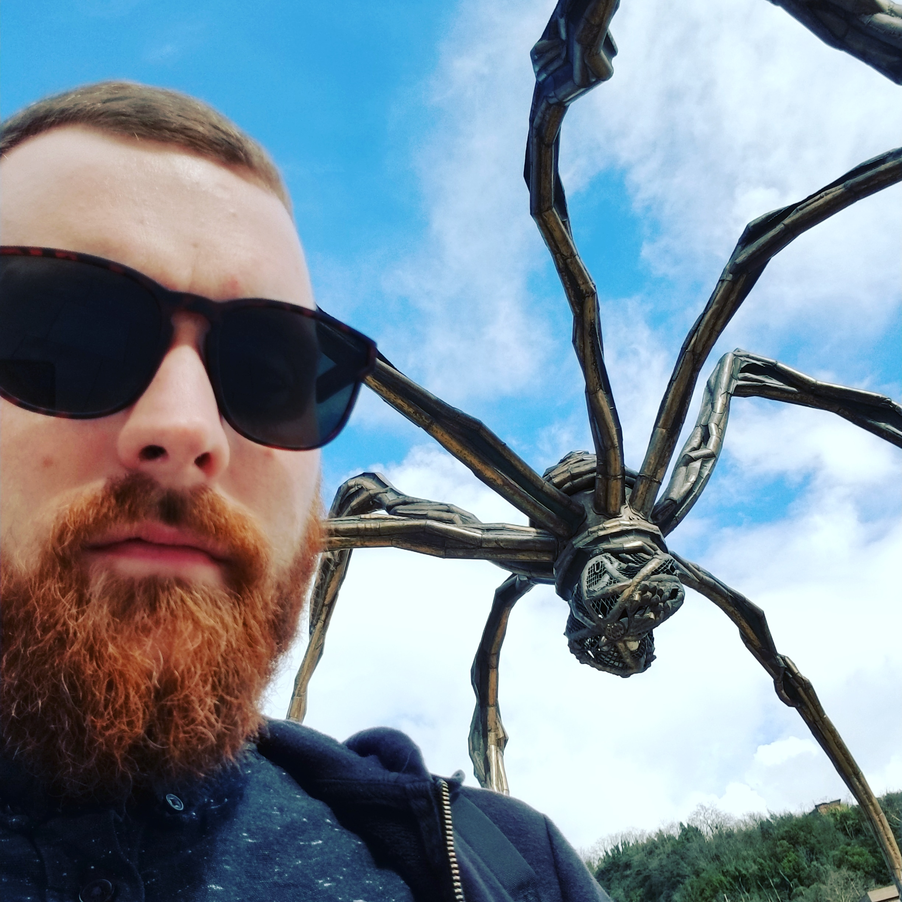

About Me

Hello! I am a computational linguist from Western Massachusetts, USA. I recently graduated from the EM-LCT program, where I spent my first year at the University of Groningen (🇳🇱) and my second year at the the University of the Basque Country (🇪🇸). I wrote my Master’s thesis about the utility of multilingual word embeddings in transfer learning, supervised by Eneko Agirre and Gertjan van Noord. In January 2019, I will start a PhD project at Uppsala University (🇸🇪), where I will focus on multilingual Universal Dependency parsing under Joakim Nivre.
Research Interests
In general, I am interested in all things concerning cross-lingual, multi-task, and transfer learning - especially when applied to low-resource languages and scenarios. I am into multilingual word and sentence representations (embeddings). On occasion, I dabble in computational sociolinguistics.
Publications
- M Abdou, A Kulmizev, V Ravishankar, L Abzianidze, J Bos: What can we learn from Semantic Tagging?; 2018 Conference on Empirical Methods in Natural Language Processing (EMNLP 2018) - to appear
- M Abdou, A Kulmizev, JG i Ametllé: [AffecThor at SemEval-2018 Task 1: A cross-linguistic approach to sentiment intensity quantification in tweets] (http://www.aclweb.org/anthology/S18-1032); Proceedings of The 12th International Workshop on Semantic Evaluation (2018)
- A Kulmizev, M Abdou, V Ravishankar, M Nissim: Discriminator at SemEval-2018 Task 10: Minimally Supervised Discrimination; Proceedings of The 12th International Workshop on Semantic Evaluation (2018)
- M Abdou, A Kulmizev, V Ravishankar: MGAD: Multilingual Generation of Analogy Datasets; Proceedings of Language Resources and Evaluation Conference (LREC) (2018)
- A Kulmizev, B Blankers, J Bjerva, M Nissim, G van Noord, B Plank, M Wieling: The power of character n-grams in native language identification; Proceedings of the 12th Workshop on Innovative Use of NLP for Building Educational Applications (BEA) (2018)